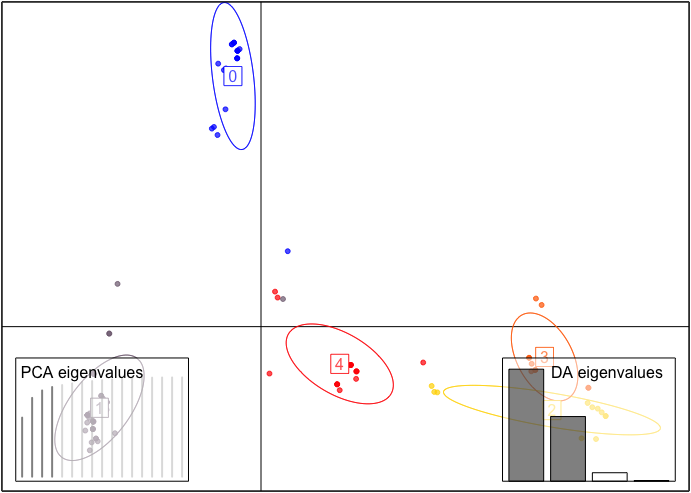

CClust-vignette.RmdCClust is an R package developed to help with clustering categorical datasets. The package can be installed from GitHub using devtools and then loaded in the usual way.
# Loads the package
library(CClust)
#> Registered S3 methods overwritten by 'ggplot2':
#> method from
#> [.quosures rlang
#> c.quosures rlang
#> print.quosures rlang
#> Registered S3 method overwritten by 'spdep':
#> method from
#> plot.mst apeThere are two main functions kmodes and khaplotype coded for clsutering categorical datasets, specifically the khaplotype function in this package can be used on clustering amplicon datasets with quality scores. In both kmodes and khaplotype, three k-means algorithms (Lloyd’s; MacQueen’s; Hartigan and Wong’s algorithm) were adapted to do clustering.
CClust is structured so the available functions fall under one of three categories.
CClust can be used is to obtain amplicon datasets from a fastq file. This is done using the function read_fastq to extract and return a list of data information: reads, quality scores and dimension of data.CClust is to clustering categorical datasets using the following functions. -khaplotype: Clustering the amplicon datasets with quality scores, only random initialization is avaiable in khaplotype. -kmodes: Clustering categorical datasets without quality information of the data, different from function khaplotype, it has six different random initialization methods.CClust can be employed to evaluate the clustering result by computing the Adjusted Rand Index with the use function adjustedRandIndex in package mclust. This is done using the function ARI. And there is a function plot_cluster in this package to help people visulize the clustering results.This vignette is set up to mimic the package structure. The sections after the introduction are dedicated to one of the three package uses. Additional details on the functions are included in these sections along with explanations of how to interpret the output and examples.
Since both kmodes and khaplotype adapted three k-means algorithms (Lloyd’s; MacQueen’s; Hartigan and Wong’s algorithm), a brief review of these three algorithms are included here.
Lloyd’s algorithm Lloyd’s algorithm prescribes alternating updates of the centers with updates of the cluster assignments. The algorithm is terminated if no obseravtion is transfered after a full circle of observations.
MacQueen’s algorithm MacQueen suggested a slight modification on Lloyd’s algorithm: update the affected centers after every change to the cluster assignments. The algorithm is terminated if no obseravtion is transfered after a full circle of observations.
Hartigan and Wong’s algorithm Hartigan’s algorithm improves on Lloyd’s and MacQueen’s algorithms by only assigning the observation to a new cluster if the objective function is guaranteed to improve. In particular, it takes into account any change in centers that will occur as a result of the move and makes sure that, even with this change, the value of the objective function will still be improved. Hartigan and Wong additionally define a live set to decide when to terminate the algorithm and to avoid unnecessary calculations. A cluster is no longer a live set only after a full cycle of the observations is made and none of them moved to or from that cluster.
For function khaplotype, only random initialization is implemented, users can set different seed.
For function kmodes, except for random initialization, there are 5 more initialization methods.
H97_RANDOM The first of two initialization schemes proposed by Huang (1997) uses the first K observations as the initial modes. This initialization scheme is randomized in the R package klaR by selecting K distinct modes at random from the n observations.
HD17 Huang (1997) mentioned above interpretted by Python author de Vos.
CLB09_RANDOM A deterministic initialization scheme peoposed by Cao et al (2009).
K-means++ The k-means++ initialization scheme for k-means (Arthur and Vassilvitskii,2007) adapted to k-modes.
Greedy K-means++ A greedy version of the algorithm mentioned above (Arthur and Vassilvitskii,2007).
CCluster contains three datasets, which will be used to demonstrate the functions in this vignette.
The zoo.int.data dataset is from the UCI Machine Learning Repository (Lichman, 2013). It includes one numeric coordinate, number of legs, which is treated as categorical.
The sim.fastq dataset is sampled from a subset of an amplicon dataset mentioned in the paper DADA2 (Callahan et al, 2016). Accordingly, the assignment.txt is the true assignment of that simulation data.
One of the ways to utilize CClust is to read the FASTQ file. This can be done using the function in the package named read_fastq.
Input
datafile: Path to a fastq file.Output
Functionality
The code below demonstrates the use of read_fastq.
# Read the sim.fastq file
dat <- read_fastq(datafile = "../data/sim.fastq")
# Prints the head of the data
dat$reads[1:3, 1:10]
#> [,1] [,2] [,3] [,4] [,5] [,6] [,7] [,8] [,9] [,10]
#> [1,] "C" "T" "T" "G" "C" "T" "T" "A" "C" "C"
#> [2,] "C" "T" "T" "G" "C" "T" "T" "A" "C" "C"
#> [3,] "C" "T" "T" "G" "C" "T" "T" "A" "C" "C"
dat$quality[1:3, 1:10]
#> [,1] [,2] [,3] [,4] [,5] [,6] [,7] [,8] [,9] [,10]
#> [1,] 27 27 27 27 27 31 31 31 31 28
#> [2,] 27 27 27 27 27 31 31 31 31 31
#> [3,] 27 27 27 27 27 29 31 31 31 31
dat$dim
#> [1] 10000 251CClust has two clustering functions kmodes and khaplotype, kmodes is for clustering categorical datasets without quality information, khaplotype is for clustering datasets with quality information, now it only can be applied to amplicon datasets with quality scores.
kmodes is intended to clustering the categorical datasets without quality information, it includes three unsupervised clustering algorithms and six initialization method.
Inputs
K Number of clusters. Default is 1.datafile Path to a data file.n_init Number of initializations.algorithm Algorithm to implement clustering. The following options are available: -"KMODES_HUANG": MacQueen’s algorithm. (default) -"KMODES_HARTIGAN_WONG": Hartigan and Wong algorithm. -"KMODES_LLOYD": Lloyd’s algorithm.init_method Initialization methods. The following options are available: - "KMODES_INIT_RANDOM_SEEDS": Random sampling. (default) - "KMODES_INIT_H97_RANDOM": Huang1997, randomized version. - "KMODES_INIT_HD17": Huang1997 interpretted by Python author de Vos. - "KMODES_INIT_CLB09_RANDOM": Cao2009, randomized version. - "KMODES_INIT_AV07": K-means++ adapted. - "KMODES_INIT_AV07_GREEDY": K-means++ greedy adapted. - ``seed Random number seed. Default is 1.shuffle Incidate if shuffle the input order. Default is FALSE.Output
"best_cluster_size": Number of observations in each cluster of the best initialization. - "best_criterion": Optimized criterion in each cluster of the best initialization. - "best_cluster_id": Cluster assignment of each observation of the best initialization. - "best_modes": Estimated modes for each cluster of the best initialization. - "best_seed_index": Seed index of the best initialization. - "total_best_criterion": Total optimized criterion of the best initialization. - "clsuter_size": Number of clusters. - "data_dim": Dimension of input data.Functionality
The code below shows how to use kmodes by changing types of algorithms and initialization methods. If run the algorithm more than one initialization, the kmodes function will return results of the initialization with the minimum total_best_criterion, which is the best solution among all of the initializations.
# Clustering with three initializations, default algorithm ("KMODES_HUANG") and shuffel the data with choosing K as 5
res_kmodes <- kmodes(K = 5, datafile = "../data/zoo.int.data", n_init = 3, shuffle = TRUE)
# Number of observations in each cluster
res_kmodes$best_cluster_size
#> [1] 21 19 23 19 19# Clustering with Harigan and Wong and K-means++ greedy adapted initialization method.
res_kmodes <- kmodes(K = 5, datafile = "../data/zoo.int.data", algorithm = "KMODES_HARTIGAN_WONG", init_method = "KMODES_INIT_AV07_GREEDY")
# Mode in each cluster
res_kmodes$best_modes
#> [,1] [,2] [,3] [,4] [,5] [,6] [,7] [,8] [,9] [,10] [,11] [,12] [,13]
#> [1,] 0 1 0 0 1 0 0 0 1 1 1 0 0
#> [2,] 6 0 0 1 0 0 0 1 0 0 1 0 0
#> [3,] 3 0 0 1 0 0 1 1 1 1 0 0 1
#> [4,] 0 0 0 0 1 0 1 1 1 1 1 0 1
#> [5,] 1 0 1 1 0 1 0 0 0 1 1 0 0
#> [,14] [,15] [,16] [,17]
#> [1,] 2 1 0 1
#> [2,] 4 0 0 0
#> [3,] 0 1 0 0
#> [4,] 0 1 0 1
#> [5,] 1 1 0 0khaplotype is intended to clustering the categorical datasets with quality information, now it can be only used on amplicon dataset stored in a fastq file, it includes three unsupervised clustering algorithms and there is only one initialization method: random initialization. khaplotype can also be applied on the datasets that used for kmodes if set run_with_quals = FALSE, however it tends to be slower when implementing Hartigan and Wong’s algorithm.
Inputs
K Number of clusters. Default is 1.datafile Path to a data file.n_init Number of initializations.algorithm Algorithm to implement clustering. The following options are available: - "FASTQ_LLOYDS_EFFICIENT": Efficient Lloyds algorithm - "FASTQ_HW_EFFICIENT": Efficient Hartigan and Wong algorithm (default) - "FASTQ_MACQUEEN": MacQueen’s algorithm - "FASTQ_LLOYDS": Lloyds algorithm (Same as "FASTQ_LLOYDS_EFFICIENT" but slow, not suggested to use) - "FASTQ_HW": Hartigan and Wong algorithm (Same as "FASTQ_HW_EFFICIENT" but slow, not suggested to use)seed Random number seed. Default is 1.shuffle Incidate if shuffle the input order. Default is FALSE.run_with_quals Indicate if conduct clustering on dataset with quality information. Default is TRUE.Output
"best_cluster_size": Number of observations in each cluster of the best initialization. - "best_criterion": Optimized criterion in each cluster of the best initialization. - "best_cluster_id": Cluster assignment of each observation of the best initialization. - "best_modes": Estimated modes for each cluster of the best initialization. - "total_best_criterion": Total optimized criterion of the best initialization. - "clsuter_size": Number of clusters. - "data_dim": Dimension of input data.Functionality
The code below shows how to use khaplotype by changing types of algorithms. If run the algorithm more than one initialization, the khaplotype function will return results of the initialization with the maximum total_best_criterion, which is the best solution among all of the initializations.
# Clustering an amplicon dataset and run three initializations with default algorithm ("FASTQ_HW_EFFICIENT")
res_khap <- khaplotype(K = 5, datafile = "../data/sim.fastq", n_init = 3)
#> Time cost: 1.085786 secs
#> Log likelihood in 1th initialization: -108539.22 (5 iterations: 2979 4939)
#> Time cost: 0.495634 secs
#> Log likelihood in 2th initialization: -108624.68 (2 iterations: 5074 1)
#> Time cost: 0.601334 secs
#> Log likelihood in 3th initialization: -103563.00 (3 iterations: 2894 577)
#> Time cost is: 2.182874 secs
#> Best optimum is: -103562.999033
# Number of observations in each cluster
res_khap$best_cluster_size
#> [1] 2894 577 1557 200 4772
# The value of objective function of the best solutions
res_khap$total_best_criterion
#> [1] -103563# Clustering an amplicon dataset and run three initializations with MacQueen's algorithm (shuffle the data)
res_khap <- khaplotype(K = 5, datafile = "../data/sim.fastq", n_init = 3, algorithm = "FASTQ_MACQUEEN", shuffle = TRUE, seed = 1)
#> Time cost: 0.062384 secs
#> Log likelihood in 1th initialization: -197241.29 (2 iterations: 1552 4977)
#> Time cost: 0.053585 secs
#> Log likelihood in 2th initialization: -230540.18 (1 iterations: 4272 5607)
#> Time cost: 0.043028 secs
#> Log likelihood in 3th initialization: -200861.80 (1 iterations: 5070 17)
#> Time cost is: 0.159764 secs
#> Best optimum is: -197241.292293
# Number of observations in each cluster
res_khap$best_cluster_size
#> [1] 1552 4977 2889 571 11The final way to make use of CClust is to compute the adjusted rand index.
The function ARI is to compute the adjusted rand index given the estimated assignments and the true assiganments.
Inputs
est A list of results returned from or .truth A numeric or character vector of true assignemts.Output
Functionality
The code below shows how to access the clustering results using function ARI.
# Estimate cluster assignments by function `khaplotype`.
res_khap <- khaplotype (K = 5, datafile = "../data/sim.fastq", n_init = 3)
#> Time cost: 1.054704 secs
#> Log likelihood in 1th initialization: -108539.22 (5 iterations: 2979 4939)
#> Time cost: 0.493262 secs
#> Log likelihood in 2th initialization: -108624.68 (2 iterations: 5074 1)
#> Time cost: 0.612689 secs
#> Log likelihood in 3th initialization: -103563.00 (3 iterations: 2894 577)
#> Time cost is: 2.160730 secs
#> Best optimum is: -103562.999033
true_assignments <- as.numeric(read.table("../data/assignment.txt", header = F, sep = ""))
# Higher ARI means the similar between two partitions, so the clustering reasults is better
ARI(res_khap, true_assignments)
#> [1] 0.9513036The function plot_cluster helps to visulize clusters after using the cluster algorithms implemented in the functions. This cluster plot make use of the function from package and function from package . The plot is based on observation assignment and discriminant analysis of principal components, therefore, when running the code, it will asks users to choose the number PCs to retain and choose the number discriminant functions to retain.
Inputs
dat Input data.res Results returned from kmodes or khaplotype.Output
Functionality The code below shows how to plot clusters after running the clustering algorithms using function plot_cluster.
# read the data and use the function `kmodes` with default setting to do the clustering
data <- read.table("../data/zoo.int.data")
res_kmodes <- kmodes(K = 5, datafile = "../data/zoo.int.data", algorithm = "KMODES_HARTIGAN_WONG", init_method = "KMODES_INIT_AV07_GREEDY", n_init = 10)
# Plot the clusters
plot_cluster(data, res_kmodes)